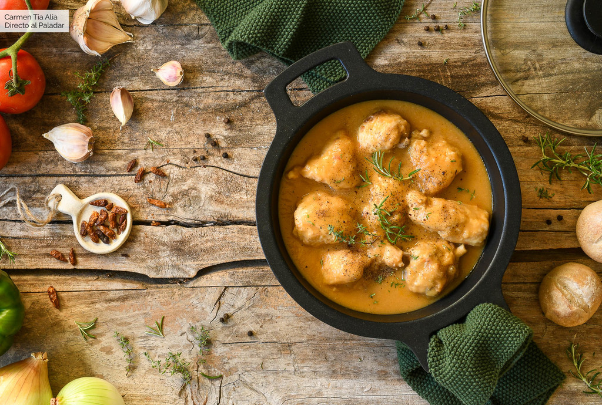

La historia

Hace años la cantante Isabel Pantoja abrió en Fuengirola, Málaga, el restaurante Cantora. Durante los años que estuvo operativo, el pollo Cantora o pollo a la pantoja fue su plato estrella. Y no es de extrañar, pues este pollo, sencillo de elaborar, es sublime.
Ingredientes
Para 4 personas
- 1 Pollo entero troceado
- 0,5 Cebolla
- 0,5 Puerro
- 4 Tomates pera
- 3 Dientes de ajo
- 0,5 Pimiento verde
- Tomillo fresco, romero y laurel
- 300ml Caldo de pollo
- 250ml Cerveza
Preparación
- Limpiamos bien el pollo, retirando restos de plumas y suciedad.
- Secamos, salpimentamos y pasamos por harina
- Calentamos un poco de aceite de oliva en una cazuela amplia y freímos ligeramente
- Pelamos y picamos los dientes de ajo, la cebolla, el puerro y el pimiento verde
- Añadimos los tomates, pelados y troceados, y pochamos.
- Separamos el pollo de la salsa y trituramos esta última con una batidora de brazo
Reviews
| Nombre | Review |
|---|---|
| Teresa | ¡Me encanta! |
| Pepe | ¡Lo gago todas las semanas! |